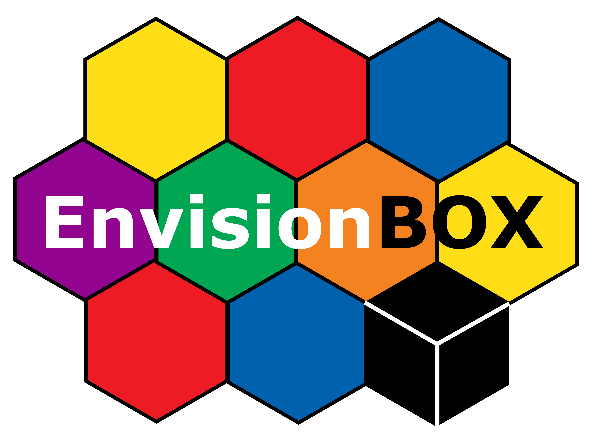
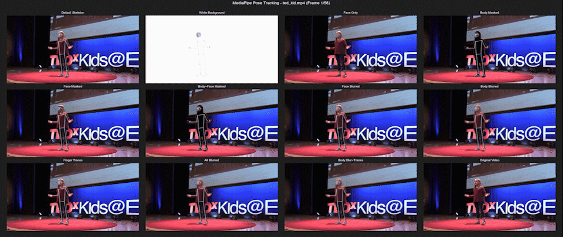
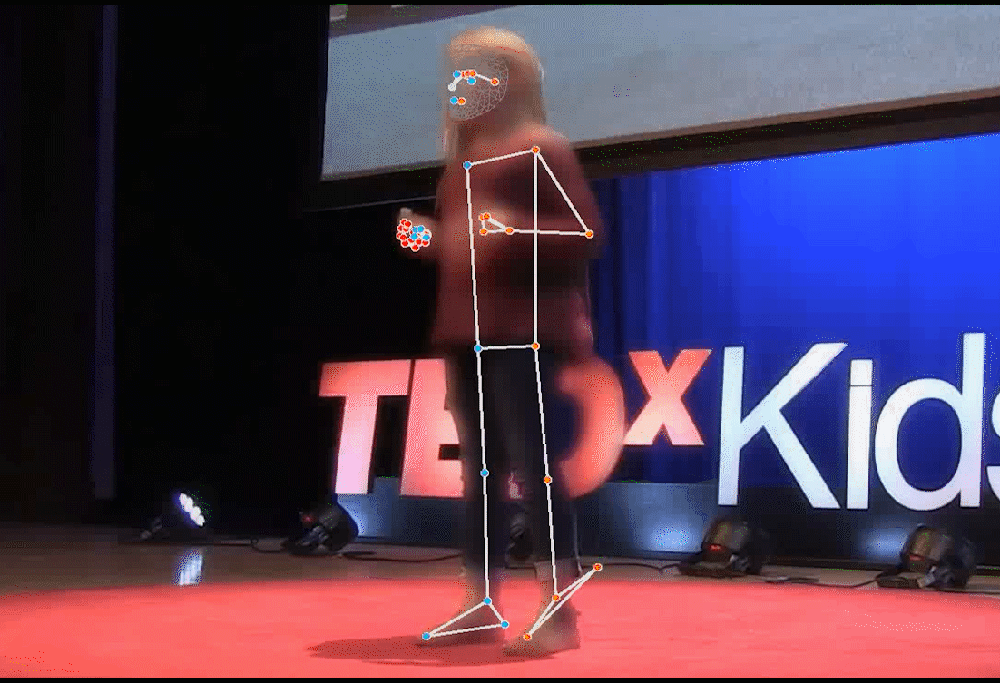

# --- Make sure the video-masking libraries are installed (mediapipe, opencv, ...) ---# You do NOT need to run any terminal command: if the libraries are missing, this cell installs# them for you, using the project's own requirements file:# Datasets/BalanceCorpus/scripts/motiontracking/requirements.txt# It finds that file automatically by walking up the folders, so it works no matter which# directory you launched Jupyter from (and on Google Colab it just installs the essentials).import sys, os, subprocessdef _find_requirements(start=None): d = os.path.abspath(start or os.getcwd()) for _ in range(12): # walk up looking for the project's requirements file cand = os.path.join(d, "Datasets", "BalanceCorpus", "scripts", "motiontracking", "requirements.txt") if os.path.isfile(cand): return cand parent = os.path.dirname(d) if parent == d: break d = parent return Nonedef _pip_install(args): subprocess.run([sys.executable, "-m", "pip", "install", "-q", *args], check=True)_need_install = "google.colab" in sys.modulesif not _need_install: try: import mediapipe, cv2, numpy, pandas # already installed? nothing to do. print("Video-masking libraries found -- good to go.") except ModuleNotFoundError: _need_install = Trueif _need_install: req = _find_requirements() try: if req: print("Installing the video-masking libraries from:\n ", req, "\n(one-time; a few minutes)...") _pip_install(["-r", req]) else: # e.g. Colab without the repo -> just the essentials print("Project requirements file not found nearby; installing the essentials...") _pip_install(["mediapipe==0.10.10", "opencv-python", "numpy", "pandas"]) print("Done. If an import fails just below, restart the kernel and re-run this cell.") except Exception as e: print("Automatic install failed:", e) print("Tip: use Python 3.9-3.12 (NOT 3.13), or follow HANDS_ON_SETUP.md.")▶ How to run this — for everyone (no coding needed)
You do not need to write any code. You just run the cells in order.
- Run a cell: click it and press Shift + Enter (or the ▶ button). Go top to bottom.
- Easiest, zero install: open this notebook in Google Colab — it installs everything for you and gives you a file-picker to upload your video.
- On your own laptop: do the one-time setup in
HANDS_ON_SETUP.mdfirst, then pick themasking-videokernel (top-right) and run top to bottom. - Your video: the notebook creates a
my_videos/folder and prints where it is — drop your.mp4there and re-run the upload cell (on Colab, use the file-picker). No video? It falls back to a demo clip. - The only thing you might change is the Options cell (the on/off switches, further down) — e.g. blur vs. black-box, show the skeleton, add finger traces.
- Results — the masked video and the motion-tracking CSVs land in the
masking_output/folder.
First run downloads the MediaPipe model once (a minute or two); after that it’s fast.
Local setup (optional — the notebook installs what it needs)Easiest: just run the notebook top to bottom. The next cell installs the video-maskinglibraries for you (locally or on Colab) if they are missing — you don’t need to run any terminalcommand, and it doesn’t matter which folder you launched Jupyter from.For a clean, reusable environment (recommended for the day), open a terminal at therepository root — the folder that contains both Datasets/ and thursday-masking/ — and run:bashconda create -n masking-video python=3.11 -yconda activate masking-videopip install -r Datasets/BalanceCorpus/scripts/motiontracking/requirements.txtpython -m ipykernel install --user --name masking-video --display-name "Python (masking-video)"Then reopen this notebook and pick the Python (masking-video) kernel (top-right). No conda? Aplain venv works too — see HANDS_ON_SETUP.md for the venv commands andtroubleshooting.> ⚠️ Use Python 3.9–3.12 — MediaPipe has no wheels for 3.13 yet.> If pip install -r …requirements.txt says “Could not open requirements file”, you’re not at the> repository root — either cd up to it, or just skip this and let the notebook install for you.
Masking-lite — Media-Pipe full-body tracking, masking, blurring & movement tracing
Lite copy for the masking day. It lives inthursday-masking/and auto-locates the corpus, so you can run it from here without moving anything.
Wim Pouw (wim.pouw@donders.ru.nl) & Sho Akamine (Sho.Akamine@mpi.nl)


Info documents
This python notebook runs you through the procedure of taking videos as inputs with a single person in the video, and outputting outputs of the kinematic timeseries, and optionally masking, blurring, and adding hand movement traces to videos with facial, hand, and arm skeletons.
The current code is derived and modified from the masked-piper tool, which is a simple but effective modification of the the Holistic Tracking by Google’s Mediapipe so that we can use it as a CPU-based light weigth tool to mask your video data while maintaining background information, and also preserving information about body kinematics.
location Repository: https://github.com/WimPouw/envisionBOX_modulesWP/tree/main/Mediapipe_Optional_Masking
location Jupyter notebook: https://github.com/WimPouw/envisionBOX_modulesWP/blob/main/MultimodalMerging/Masking_Mediapiping.ipynb
Current Github: https://github.com/WimPouw/TowardsMultimodalOpenScience
Version
2.0.0 (we added some functionalities such as blurring and movement tracing, and fixed some bugs with non-present right/left body parts)
Additional information backbone of the tool (Mediapipe Holistic Tracking)
https://google.github.io/mediapipe/solutions/holistic.html
Citation of mediapipe
citation: Lugaresi, C., Tang, J., Nash, H., McClanahan, C., Uboweja, E., Hays, M., … & Grundmann, M. (2019). Mediapipe: A framework for building perception pipelines. arXiv preprint arXiv:1906.08172.
Citation of masked piper
- citation: Owoyele, B., Trujillo, J., De Melo, G., & Pouw, W. (2022). Masked-Piper: Masking personal identities in visual recordings while preserving multimodal information. SoftwareX, 20, 101236.
- Original Repo: https://github.com/WimPouw/TowardsMultimodalOpenScience
Citation of this code
- citation: Pouw, W., & Akamine, S. (2025). Using Media-Pipe for full-body tracking, masking, blurring, and movement tracing. Retrieved from https://github.com/WimPouw/envisionBOX_modulesWP/tree/main/Mediapipe_Optional_Masking
Use
Make sure to install all the packages in requirements.txt. Then move your videos that you want to mask into the input folder. Then run this code, which will loop through all the videos contained in the input folder; and saves all the results in the output folders.
Setting up packages and folder structure
# --- Load the software libraries this notebook uses ---# (These come from the environment you set up earlier; running this cell locally installs nothing.)import mediapipe as mp # Google MediaPipe: finds the body/hands/face "skeleton" in each video frameimport cv2 # OpenCV: reads and writes video, and does the blurringimport math # basic mathsimport numpy as np # fast number-crunching over arrays (pixels and coordinates)import pandas as pd # tables (used lightly here)import csv # writes the movement data out as spreadsheet-friendly .csv filesimport os, sys # find files and folders on your computer# --- Decide where YOUR videos go IN, and where the results come OUT ---# Everything is kept NEXT TO THIS NOTEBOOK, so it is always writable (works on Colab too).BASE = os.getcwd() # the folder this notebook is running fromMYDIR = os.path.join(BASE, "my_videos") # >>> drop your .mp4 files in here <<<outputf_mask = os.path.join(BASE, "masking_output", "Output_Videos") + os.sep # masked videos come out hereouttputf_ts = os.path.join(BASE, "masking_output", "Output_TimeSeries") + os.sep # movement .csv files come out herefor d in (MYDIR, outputf_mask, outtputf_ts): os.makedirs(d, exist_ok=True) # create those folders if they don't exist yet# Optionally locate the bundled example corpus, so there is a demo clip if you bring no video of your own.# (Perfectly fine if it is not found -- e.g. on Colab -- you will just use your own upload instead.)def find_corpus(start=None): d = os.path.abspath(start or os.getcwd()) for _ in range(10): # walk up the folders looking for the dataset cand = os.path.join(d, "Datasets", "BalanceCorpus") if os.path.isdir(os.path.join(cand, "videos")): return cand p = os.path.dirname(d) if p == d: break d = p return NoneCORPUS = find_corpus()# Print a little map so you know exactly where to put things and where to look afterwards:print("Put your videos in :", MYDIR)print("Results go to :", os.path.abspath(os.path.join(BASE, "masking_output")))print("Bundled corpus :", CORPUS or "(not found - that is fine, just upload your own)")Choose your video(s) — upload your own, or use the demo
Run the cell below. On Colab a file picker opens — pick one or more .mp4 files (or Cancel to use the demo). Locally, drop .mp4 files into the my_videos/ folder printed above and re-run. If you provide nothing, it falls back to a single demo clip from the corpus.
# Upload (Colab) or read local files, then decide which videos to process.
if "google.colab" in sys.modules:
from google.colab import files
print("Upload one or more .mp4 files (or press Cancel to use the demo):")
try:
uploaded = files.upload()
for name, data in uploaded.items():
with open(os.path.join(MYDIR, name), "wb") as fh:
fh.write(data)
except Exception as e:
print("Upload skipped:", e)
def list_mp4(folder):
return [os.path.join(dp, f) for dp, dn, fs in os.walk(folder)
for f in fs if f.lower().endswith(".mp4") and not f.startswith("._")]
myvids = list_mp4(MYDIR)
if myvids:
vfiles = myvids
print(f"Using YOUR {len(vfiles)} video(s):")
elif CORPUS:
vfiles = list_mp4(os.path.join(CORPUS, "videos"))[:1] # one demo clip keeps this "lite"
print(f"No uploads found -> using {len(vfiles)} demo clip from the corpus:")
else:
vfiles = []
print(f"No videos yet. Drop .mp4 files into: {MYDIR}")
for v in vfiles:
print(" ", v)Naming the tracked points, and a few small helpersFor every video frame, MediaPipe returns a “skeleton” — a set of numbered dots (calledlandmarks or keypoints) placed on the body (33 dots), each hand (21 dots each), and theface (478 dots on a fine mesh). Their positions over time are exactly the movement data we save.The next cell just:- gives every dot a readable column name (so the output spreadsheets make sense), and- defines three tiny helper functions that tidy MediaPipe’s raw output into plain numbers.You don’t need to read the code — just run the cell and move on. It prints how many points thereare for the body, hands, and face (33, 42, and 478).
#initialize modules and functions
#load in mediapipe modules
mp_holistic = mp.solutions.holistic
# Import drawing_utils and drawing_styles.
mp_drawing = mp.solutions.drawing_utils
mp_drawing_styles = mp.solutions.drawing_styles
##################FUNCTIONS AND OTHER VARIABLES
#landmarks 33x that are used by Mediapipe (Blazepose)
markersbody = ['NOSE', 'LEFT_EYE_INNER', 'LEFT_EYE', 'LEFT_EYE_OUTER', 'RIGHT_EYE_OUTER', 'RIGHT_EYE', 'RIGHT_EYE_OUTER',
'LEFT_EAR', 'RIGHT_EAR', 'MOUTH_LEFT', 'MOUTH_RIGHT', 'LEFT_SHOULDER', 'RIGHT_SHOULDER', 'LEFT_ELBOW',
'RIGHT_ELBOW', 'LEFT_WRIST', 'RIGHT_WRIST', 'LEFT_PINKY', 'RIGHT_PINKY', 'LEFT_INDEX', 'RIGHT_INDEX',
'LEFT_THUMB', 'RIGHT_THUMB', 'LEFT_HIP', 'RIGHT_HIP', 'LEFT_KNEE', 'RIGHT_KNEE', 'LEFT_ANKLE', 'RIGHT_ANKLE',
'LEFT_HEEL', 'RIGHT_HEEL', 'LEFT_FOOT_INDEX', 'RIGHT_FOOT_INDEX']
markershands = ['LEFT_WRIST', 'LEFT_THUMB_CMC', 'LEFT_THUMB_MCP', 'LEFT_THUMB_IP', 'LEFT_THUMB_TIP', 'LEFT_INDEX_FINGER_MCP',
'LEFT_INDEX_FINGER_PIP', 'LEFT_INDEX_FINGER_DIP', 'LEFT_INDEX_FINGER_TIP', 'LEFT_MIDDLE_FINGER_MCP',
'LEFT_MIDDLE_FINGER_PIP', 'LEFT_MIDDLE_FINGER_DIP', 'LEFT_MIDDLE_FINGER_TIP', 'LEFT_RING_FINGER_MCP',
'LEFT_RING_FINGER_PIP', 'LEFT_RING_FINGER_DIP', 'LEFT_RING_FINGER_TIP', 'LEFT_PINKY_FINGER_MCP',
'LEFT_PINKY_FINGER_PIP', 'LEFT_PINKY_FINGER_DIP', 'LEFT_PINKY_FINGER_TIP',
'RIGHT_WRIST', 'RIGHT_THUMB_CMC', 'RIGHT_THUMB_MCP', 'RIGHT_THUMB_IP', 'RIGHT_THUMB_TIP', 'RIGHT_INDEX_FINGER_MCP',
'RIGHT_INDEX_FINGER_PIP', 'RIGHT_INDEX_FINGER_DIP', 'RIGHT_INDEX_FINGER_TIP', 'RIGHT_MIDDLE_FINGER_MCP',
'RIGHT_MIDDLE_FINGER_PIP', 'RIGHT_MIDDLE_FINGER_DIP', 'RIGHT_MIDDLE_FINGER_TIP', 'RIGHT_RING_FINGER_MCP',
'RIGHT_RING_FINGER_PIP', 'RIGHT_RING_FINGER_DIP', 'RIGHT_RING_FINGER_TIP', 'RIGHT_PINKY_FINGER_MCP',
'RIGHT_PINKY_FINGER_PIP', 'RIGHT_PINKY_FINGER_DIP', 'RIGHT_PINKY_FINGER_TIP']
facemarks = [str(x) for x in range(478)] #there are 478 points for the face mesh (see google holistic face mesh info for landmarks)
print("Note that we have the following number of pose keypoints for markers body")
print(len(markersbody))
print("\n Note that we have the following number of pose keypoints for markers hands")
print(len(markershands))
print("\n Note that we have the following number of pose keypoints for markers face")
print(len(facemarks ))
#set up the column names and objects for the time series data (add time as the first variable)
markerxyzbody = ['time']
markerxyzhands = ['time']
markerxyzface = ['time']
for mark in markersbody:
for pos in ['X', 'Y', 'Z', 'visibility']: #for markers of the body you also have a visibility reliability score
nm = pos + "_" + mark
markerxyzbody.append(nm)
for mark in markershands:
for pos in ['X', 'Y', 'Z']:
nm = pos + "_" + mark
markerxyzhands.append(nm)
for mark in facemarks:
for pos in ['X', 'Y', 'Z']:
nm = pos + "_" + mark
markerxyzface.append(nm)
#check if there are numbers in a string
def num_there(s):
return any(i.isdigit() for i in s)
#take some google classification object and convert it into a string
def makegoginto_str(gogobj):
gogobj = str(gogobj).strip("[]")
gogobj = gogobj.split("\n")
return(gogobj[:-1]) #ignore last element as this has nothing
#make the stringifyd position traces into clean numerical values
def listpostions(newsamplemarks):
newsamplemarks = makegoginto_str(newsamplemarks)
tracking_p = []
for value in newsamplemarks:
if num_there(value):
stripped = value.split(':', 1)[1]
stripped = stripped.strip() #remove spaces in the string if present
tracking_p.append(stripped) #add to this list
return(tracking_p)Note that we have the following number of pose keypoints for markers body
33
Note that we have the following number of pose keypoints for markers hands
42
Note that we have the following number of pose keypoints for markers face
478Main procedure — broken into stepsThe original tool did everything in one long loop. Here it is the same pipeline, but eachper-frame operation is pulled out into its own small, named function so you can read, teach, andtweak them one at a time. Nothing about the behaviour changes — the final loop (Step 7) calls thesein exactly the original order, under the same on/off switches below.Pipeline per frame: choose background → (body mask) → (body blur) → (face blur) → (face mask) →finger traces → draw skeleton → record kinematics.> For non-programmers: Steps 1–6 below only define the tools — when you run those cells,> nothing visible happens, and that is completely normal. Step 7 is the one that actually> processes your videos and writes the masked video + movement files. So: run every cell top to> bottom, don’t worry that Steps 1–6 look “empty”, and watch for the progress messages at Step 7.
Options — the on/off switches
These flags are the dials you play with. The default is full-body blur + full skeleton + index-finger traces. Every function in the steps below reads these.
# MASKING AND BLURRING OPTIONS
skeleton = True
skeleton_face_only = False # Only show face skeleton (no body, no hands)
whitebackground = False # Grey background with skeleton only (no body, no face)
maskingbody = False # Masks the body silhouette with fully black color (original masked-piper approach)
maskingface = False # Masks the face (fully black color)
blurringface = False # Blurs the face
blurringbody = True # Blurs the body region
blurringfactor = 1 # Blurring intensity (0-1, 1 is full blur)
showrender = False # Show the rendered video in a window while processing
# TRACE OPTIONS
add_finger_traces = True # Add fading traces for index fingers
trace_length_seconds = 1.5 # Length of trace in seconds
trace_color_left = (0, 255, 0) # Green for left index finger trace
trace_color_right = (0, 0, 255) # Blue for right index finger traceStep 1 · Choose the background
Every frame starts from one of two canvases: the white background mode (skeleton floats on white, body/face removed) or the original frame (we then mask/blur on top of it).
def choose_background(image, results, h, w, whitebackground):
"""Return the starting BGR canvas for this frame."""
if whitebackground:
white_image = np.full((h, w, 3), (255, 255, 255), dtype=np.uint8)
return cv2.cvtColor(white_image, cv2.COLOR_RGB2BGR)
return cv2.cvtColor(image, cv2.COLOR_RGB2BGR)Step 2 · Mask or blur the body
mask_body is the original Masked-Piper move: use MediaPipe’s segmentation mask to black out the body silhouette while keeping the background. blur_body is the gentler alternative: Gaussian-blur only the body region so shape/motion survive but identity is degraded.
def mask_body(image, results, h, w):
"""Original masked-piper: black out the body silhouette using the segmentation mask."""
image_with_alpha = np.concatenate([image, np.full((h, w, 1), 255, dtype=np.uint8)], axis=-1)
mask_img = np.zeros_like(image, dtype=np.uint8)
mask_img[:, :] = (255, 255, 255)
segm_2class = 0.2 + 0.8 * results.segmentation_mask
segm_2class = np.repeat(segm_2class[..., np.newaxis], 3, axis=2)
annotated_image = mask_img * segm_2class * (1 - segm_2class)
mask = np.concatenate([annotated_image, np.full((h, w, 1), 255, dtype=np.uint8)], axis=-1)
image_with_alpha[mask == 0] = 0
return cv2.cvtColor(image_with_alpha, cv2.COLOR_RGB2BGR)
def blur_body(original_image, results, blurringfactor):
"""Gaussian-blur only the body region (identity down, shape/motion kept)."""
segm_2class = 0.2 + 0.8 * results.segmentation_mask
body_mask = segm_2class
kernel_size = int(51 * blurringfactor)
if kernel_size % 2 == 0:
kernel_size += 1
blurred_image = cv2.GaussianBlur(original_image, (kernel_size, kernel_size), 0)
body_mask_3channel = cv2.merge([body_mask] * 3)
return (original_image * (1 - body_mask_3channel * blurringfactor) +
blurred_image * (body_mask_3channel * blurringfactor)).astype(np.uint8)Step 3 · Blur or mask the face
Same idea, but scoped to the face via a convex hull over the 478 face-mesh points. blur_face softens it; mask_face blacks it out entirely.
def blur_face(original_image, results, h, w, blurringfactor):
"""Gaussian-blur only the face region (convex hull over the face mesh)."""
face_mask = np.zeros((h, w), dtype=np.uint8)
landmarks = results.face_landmarks.landmark
face_points = np.array([(int(landmarks[i].x * w), int(landmarks[i].y * h))
for i in range(len(landmarks))], dtype=np.int32)
hull = cv2.convexHull(face_points)
cv2.fillConvexPoly(face_mask, hull, 255)
kernel_size = int(51 * blurringfactor)
if kernel_size % 2 == 0:
kernel_size += 1
blurred_image = cv2.GaussianBlur(original_image, (kernel_size, kernel_size), 0)
face_mask_3channel = cv2.cvtColor(face_mask, cv2.COLOR_GRAY2BGR) / 255.0
return (original_image * (1 - face_mask_3channel * blurringfactor) +
blurred_image * (face_mask_3channel * blurringfactor)).astype(np.uint8)
def mask_face(original_image, results, h, w):
"""Make the face fully black (convex hull over the face mesh)."""
face_mask = np.zeros((h, w), dtype=np.uint8)
landmarks = results.face_landmarks.landmark
face_points = np.array([(int(landmarks[i].x * w), int(landmarks[i].y * h))
for i in range(len(landmarks))], dtype=np.int32)
hull = cv2.convexHull(face_points)
cv2.fillConvexPoly(face_mask, hull, 255)
original_image[face_mask > 0] = (0, 0, 0)
return original_imageStep 4 · Fading finger-motion traces
Optionally draw a fading tail behind each index-finger tip (landmark 8) — a lightweight way to show gesture motion on the masked video. The trace buffers persist across frames within a video, capped to trace_length_seconds.
def update_finger_traces(original_image, results, left_finger_trace, right_finger_trace,
trace_frames, w, h, trace_color_left, trace_color_right):
"""Append current index-finger tips to the trace buffers and draw fading tails."""
left_finger_pos = None
right_finger_pos = None
if results.left_hand_landmarks:
left_landmark = results.left_hand_landmarks.landmark[8] # index-finger tip
left_finger_pos = (int(left_landmark.x * w), int(left_landmark.y * h))
if results.right_hand_landmarks:
right_landmark = results.right_hand_landmarks.landmark[8]
right_finger_pos = (int(right_landmark.x * w), int(right_landmark.y * h))
if left_finger_pos:
left_finger_trace.append(left_finger_pos)
if right_finger_pos:
right_finger_trace.append(right_finger_pos)
if len(left_finger_trace) > trace_frames:
left_finger_trace.pop(0)
if len(right_finger_trace) > trace_frames:
right_finger_trace.pop(0)
for i in range(len(left_finger_trace) - 1):
if i < len(left_finger_trace) and (i + 1) < len(left_finger_trace):
opacity = int(255 * (i + 1) / len(left_finger_trace)); alpha = opacity / 255.0
overlay = original_image.copy()
cv2.line(overlay, left_finger_trace[i], left_finger_trace[i + 1], trace_color_left, 2)
original_image = cv2.addWeighted(overlay, alpha, original_image, 1 - alpha, 0)
for i in range(len(right_finger_trace) - 1):
if i < len(right_finger_trace) and (i + 1) < len(right_finger_trace):
opacity = int(255 * (i + 1) / len(right_finger_trace)); alpha = opacity / 255.0
overlay = original_image.copy()
cv2.line(overlay, right_finger_trace[i], right_finger_trace[i + 1], trace_color_right, 2)
original_image = cv2.addWeighted(overlay, alpha, original_image, 1 - alpha, 0)
return original_imageStep 5 · Draw the skeleton
Overlay the MediaPipe landmarks — hands, face mesh, and body pose (or face-only). This is the keypoint layer MaskBench and the gesture analyses read.
def draw_skeleton(original_image, results, skeleton, skeleton_face_only):
"""Overlay hand / face-mesh / pose landmarks in place."""
if skeleton:
mp_drawing.draw_landmarks(original_image, results.left_hand_landmarks, mp_holistic.HAND_CONNECTIONS)
mp_drawing.draw_landmarks(original_image, results.right_hand_landmarks, mp_holistic.HAND_CONNECTIONS)
mp_drawing.draw_landmarks(
original_image,
results.face_landmarks,
mp_holistic.FACEMESH_TESSELATION,
landmark_drawing_spec=None,
connection_drawing_spec=mp_drawing_styles.get_default_face_mesh_tesselation_style()
)
mp_drawing.draw_landmarks(
original_image,
results.pose_landmarks,
mp_holistic.POSE_CONNECTIONS,
landmark_drawing_spec=mp_drawing_styles.get_default_pose_landmarks_style()
)
elif skeleton_face_only:
mp_drawing.draw_landmarks(
original_image,
results.face_landmarks,
mp_holistic.FACEMESH_TESSELATION,
landmark_drawing_spec=None,
connection_drawing_spec=mp_drawing_styles.get_default_face_mesh_tesselation_style()
)Step 6 · Record the kinematic time series
Pull the numeric landmark positions for this frame (body, hands, face) and prepend the timestamp. The hand handling keeps left/right from swapping when one hand is missing.
def extract_timeseries_rows(results, time, markerxyzhands):
"""Return (body, hands, face) rows for this frame, each starting with `time`."""
samplebody = listpostions(results.pose_landmarks)
sampleface = listpostions(results.face_landmarks)
# Process hands separately (fixes the left/right hand swapping issue)
sampleLH = listpostions(results.left_hand_landmarks)
sampleRH = listpostions(results.right_hand_landmarks)
if len(sampleLH) == 0:
sampleLH = ["" for x in range(int(len(markerxyzhands) / 2))]
samplehands = sampleLH + sampleRH
samplebody.insert(0, time)
samplehands.insert(0, time)
sampleface.insert(0, time)
return samplebody, samplehands, samplefaceStep 7 · Run the pipeline over every video
The driver. For each video it opens a writer, then per frame runs Holistic and calls the steps above in the original order and under the same switches, writes the annotated frame, and finally saves the body / hands / face CSVs. (Identical behaviour to the original single-cell version.)
# Process videosfor vidf in vfiles: print(f"Processing video: {vidf}") print(f"Video {vfiles.index(vidf)+1} of {len(vfiles)}") videoname = vidf videoloc = videoname capture = cv2.VideoCapture(videoloc) frameWidth = capture.get(cv2.CAP_PROP_FRAME_WIDTH) frameHeight = capture.get(cv2.CAP_PROP_FRAME_HEIGHT) samplerate = capture.get(cv2.CAP_PROP_FPS) # check if file already exist, otherwise skip if os.path.exists(outputf_mask + os.path.basename(vidf)): print(f"Output video {outputf_mask + os.path.basename(vidf)} already exists. Skipping processing for this video.") continue fourcc = cv2.VideoWriter_fourcc(*'MP4V') out = cv2.VideoWriter(outputf_mask + os.path.basename(vidf), fourcc, fps=samplerate, frameSize=(int(frameWidth), int(frameHeight))) time = 0 tsbody = [markerxyzbody] tshands = [markerxyzhands] tsface = [markerxyzface] # Initialize trace buffers for index fingers if add_finger_traces: trace_frames = int(trace_length_seconds * samplerate) left_finger_trace = [] # (x, y) positions for left index finger right_finger_trace = [] # (x, y) positions for right index finger with mp_holistic.Holistic(static_image_mode=False, enable_segmentation=True, refine_face_landmarks=True) as holistic: while True: ret, image = capture.read() if ret == True: image = cv2.cvtColor(image, cv2.COLOR_BGR2RGB) results = holistic.process(image) h, w, c = image.shape # A person was detected in this frame iff Holistic returned a segmentation mask. # (Guard on segmentation_mask, not face_landmarks: the body mask/blur below needs it, # and it is None on person-less frames -> fall through to the NaN branch.) if results.segmentation_mask is not None: # Step 1: background (white mode overrides the others) original_image = choose_background(image, results, h, w, whitebackground) # Step 2: body mask / blur if maskingbody and not whitebackground: original_image = mask_body(image, results, h, w) if blurringbody and not whitebackground: original_image = blur_body(original_image, results, blurringfactor) # Step 3: face blur / mask if blurringface and results.face_landmarks and not whitebackground: original_image = blur_face(original_image, results, h, w, blurringfactor) if maskingface and results.face_landmarks and not whitebackground: original_image = mask_face(original_image, results, h, w) # Step 4: finger traces if add_finger_traces: original_image = update_finger_traces( original_image, results, left_finger_trace, right_finger_trace, trace_frames, w, h, trace_color_left, trace_color_right) # Step 5: skeleton draw_skeleton(original_image, results, skeleton, skeleton_face_only) # Step 6: kinematics samplebody, samplehands, sampleface = extract_timeseries_rows(results, time, markerxyzhands) tsbody.append(samplebody) tshands.append(samplehands) tsface.append(sampleface) else: original_image = cv2.cvtColor(image, cv2.COLOR_RGB2BGR) # Add NaN data samplebody = [np.nan for x in range(len(markerxyzbody)-1)] samplehands = [np.nan for x in range(len(markerxyzhands)-1)] sampleface = [np.nan for x in range(len(markerxyzface)-1)] samplebody.insert(0, time) samplehands.insert(0, time) sampleface.insert(0, time) tsbody.append(samplebody) tshands.append(samplehands) tsface.append(sampleface) if showrender: cv2.imshow("resizedimage", original_image) out.write(original_image) time = time + (1000/samplerate) if cv2.waitKey(1) == 27: break if ret == False: break out.release() capture.release() cv2.destroyAllWindows() # Save CSV files filebody = open(outtputf_ts + os.path.basename(vidf)[:-4] + '_body.csv', 'w+', newline='') with filebody: write = csv.writer(filebody) write.writerows(tsbody) filehands = open(outtputf_ts + os.path.basename(vidf)[:-4] + '_hands.csv', 'w+', newline='') with filehands: write = csv.writer(filehands) write.writerows(tshands) fileface = open(outtputf_ts + os.path.basename(vidf)[:-4] + '_face.csv', 'w+', newline='') with fileface: write = csv.writer(fileface) write.writerows(tsface)print("Done with processing all folders; go look in your output folders!")Example output (full body blur + skeleton + Tracing)
